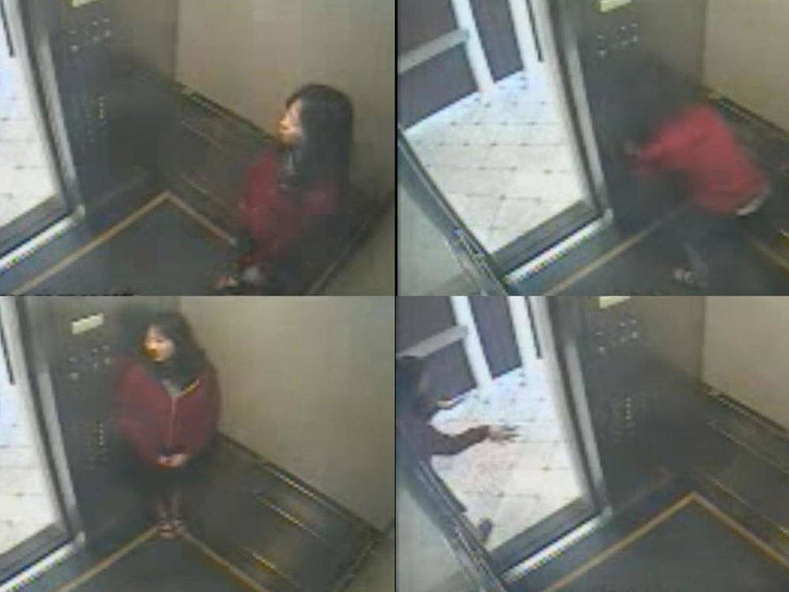

Elisa Lam, también conocida por su nombre cantonés, Lam Ho Yi, nació el 30 de abril de 1991. Fue una estudiante canadiense de la Universidad de Columbia Británica en Vancouver.
El 27 de enero de 2013, Elisa Lam llegó a Los Ángeles. Su plan era realizar un viaje en solitario por toda California.Su idea del viaje no les gustaba para nada a sus padres, pero como ella tenía una pequeña depresión decidieron que iniciara la aventura.
La primera parada de Elisa era Los Ángeles. El hotel que eligió por Internet y donde reservó, era de lo peor, pero Elisa desconocía de la geografía de la ciudad. Su habitación estaba en el Hotel Cecil, ubicado en el barrio denominado Skid Row: un conglomerado de alcohólicos, drogadictos y ladrones.
En la calle principal de ese barrio, Main Street, estaba el hotel Cecil (que luego de los hechos que veremos pasó a llamarse Stay on Main), con sus 90 años de antigüedad y sus 600 habitaciones.
Allí debería pasar cuatro días Elisa, y la chica escribió en su Tumblr: "Fue construido en 1928, de ahí su estilo Art Decó. Así que sí, tiene clase, pero como todo en Los Ángeles está en decadencia. Desde luego este es el sitio que Baz Luhrman necesita para rodar el Gran Gatsby".
Después de tres en la ciudad, el 31 de enero era su última jornada en Los Ángeles. A la noche fue a una librería cerca del hotel, Last Bookstore, donde compró libros y discos. La empleada que la atendió, Katie Orphan, diría días después: "era una chica muy extrovertida, muy animada y muy amable".
Con sus libros y discos en una bolsa, Elisa entró al hotel y los empleados vieron su ingreso. Fue la última vez que se la vio con vida.
Desaparición
Al día siguiente, 1 de febrero, los padres de Elisa se intranquilizaron. Ella no los había llamado y eso era más que extraño. Se comunicaba con su casa a diario y más de una vez. Enseguida llamaron al hotel. Les dijeron que no sabían nada de Elisa. Al entrar a revisar la habitación se dieron cuenta que ella no estaba. Y la policía fue alertada. No está de más decir que su familia voló a Los Ángeles para ayudar con la búsqueda.
La policía registró el hotel en la medida en que legalmente podía hacerlo. Registraron la habitación de Lam y llevaron perros que recorrieron el edificio, incluida la azotea, pero los caninos no detectaron su olor.
"Pero no buscamos en todas las habitaciones", dijo el sargento Rudy López más tarde,
"eso solo lo podíamos hacer si teníamos una causa probable" para creer que se había cometido un crimen.
El 6 de febrero la división robos y homicidios de la policía de Los Ángeles dio una conferencia de prensa para informar de la misteriosa desaparición de una turista canadiense. La policía dio los datos de Elisa: mujer de rasgos asiáticos, pelo negro y ojos marrones, estatura de 1,62 metros y 52 kilos de peso. Y mostraron su foto. Se publicaron volantes con su imagen en el vecindario y en línea. El caso trajo la atención del público a través de los medios.
Los padres de Elisa y la conferencia de prensa de la policía de Los Ángeles.
El video del ascensor
Una semana después, el 13 de febrero, sucedería un hecho clave. Después de que pasara otra semana sin señales de ella, el LAPD lanzó un vídeo del último avistamiento conocido de ella tomado por una cámara de videovigilancia el 1 de febrero en uno de los ascensores del Cecil. El vídeo atrajo el interés mundial sobre el caso debido al extraño comportamiento de Lam, y fue ampliamente analizado y discutido

El mismo muestra un ascensor del hotel Cecil y a Elisa entrando a él en la medianoche del 31 de enero. La filmación dura 3 minutos y 59 segundos y aterroriza.
En el vídeo, la cámara de una de las esquinas traseras de la cabina del ascensor mira hacia abajo desde el techo, ofreciendo una vista no solo del interior sino también del pasillo exterior. Es algo granulada, y la marca de tiempo de la parte inferior está oscurecida. En algunos puntos, la boca de Lam está pixelada.
Al principio, Lam entra vestida con una sudadera con cremallera roja y capucha sobre una camiseta gris, con shorts negros y sandalias. Entra desde la izquierda y va al panel de control, al parecer para seleccionar varios pisos y luego retrocede a la esquina. Después de unos segundos durante los que la puerta no se cierra, se acerca, se inclina hacia adelante para que su cabeza atraviese la puerta, mira en ambas direcciones y rápidamente vuelve a entrar, retrocede hasta la pared y luego a la esquina cerca del panel de control. La puerta permaneció abierta.
Ella camina de nuevo y se para en el umbral, inclinándose hacia un lado. De repente, sale al pasillo, luego a su lado, de vuelta, mirando hacia un lado, luego vuelve a salir. Luego da un paso hacia los lados otra vez, y durante unos segundos es casi invisible detrás de la pared a la que le da la espalda justo afuera. La puerta se queda abierta.
Se puede ver su brazo derecho subiendo a su cabeza, y luego se gira para volver a entrar en la cabina, poniendo ambas manos en el costado de la puerta. Luego va al panel de control, presiona muchos más botones, algunos más de una vez, y luego regresa a la pared por la que había entrado al ascensor, colocando ambas manos sobre sus oídos nuevamente y brevemente mientras camina de regreso a la sección de la pared que se había enfrentado antes. La puerta permanece abierta.
Gira hacia la derecha y comienza a frotarse los antebrazos, luego agita las manos a los costados con las palmas de las manos en posición plana y los dedos extendidos, mientras se inclina ligeramente hacia adelante y se balancea suavemente. Todo esto se puede ver a través de la puerta, que permanece abierta. Después de volver a la pared y caminar hacia la izquierda, la puerta finalmente se cierra.
Se volvió a publicar ampliamente, incluido en el sitio chino de intercambio de vídeos Youku, donde obtuvo 3 millones de visitas y 40.000 comentarios en sus primeros 10 días. A muchos de los comentaristas les pareció perturbador verlo.
Video:
https://youtu.be/3TjVBpyTeZM
Se plantearon varias teorías para explicar sus acciones. Una era que Lam intentaba que el ascensor se moviera para escapar de alguien que la perseguía. Otros sugirieron que podría estar bajo la influencia del éxtasis o de alguna otra droga de fiestas. Cuando se conoció su trastorno bipolar, también surgió la teoría de que estuviese teniendo un episodio psicótico.
Otros espectadores argumentaron que el vídeo había sido manipulado antes de hacerse público. A pesar del oscurecimiento de la marca de tiempo, afirmaron que las partes se habían ralentizado, y que discretamente se había eliminado casi un minuto de grabación. Esto podría haberse hecho simplemente para proteger la identidad de alguien que de lo contrario estaría en el vídeo, pero que tuvo poco o nada que ver con el caso, o para ocultar pruebas si la desaparición y la muerte de Lam hubieran sido el resultado de un acto delictivo.
Hallazgo del cuerpo
Cinco días después de mostrarse el video, llega el golpe inesperado.
El 18 de febrero un huésped del hotel se queja en la recepción: no puede ducharse porque sale poca agua. Tras cartón otro viajero dice que el sabor del agua en su cuarto
"es extraño". Y luego se suma un tercero que dice que al abrir la ducha el agua sale con un color marrón.
El hotel Cecil tenía cuatro tanques de 3.785 litros en la azotea del edificio. El encargado de mantenimiento subió a revisarlos. El primero estaba perfecto. El segundo igual. Pero al abrir el tercero… se encontró el cuerpo de Elisa Lam.
El tanque se drenó y se abrió debido a que su escotilla de mantenimiento era demasiado pequeña para acomodar el equipo necesario para extraer el cuerpo de Lam.
El 21 de febrero, la oficina forense de Los Ángeles emitió un hallazgo de ahogamiento accidental, con el trastorno bipolar como un factor significativo. El informe forense completo, publicado en junio, indicó que el cuerpo de Lam se había encontrado desnudo; flotaba en el agua ropa similar a la que llevaba en el vídeo del ascensor, cubierta con "partículas de arena". Junto a ella se encontraron su reloj y la llave de la habitación.
El cuerpo de Lam estaba moderadamente descompuesto e hinchado. Era principalmente verdoso, con algunos jaspeados evidentes en el abdomen y también evidente separación de la piel. No había evidencia de trauma físico, agresión sexual, o suicidio. Las pruebas de toxicología - incompletas, pues no se había conservado suficiente sangre - mostraban rastros compatibles con la medicación de prescripción que se encontraba entre sus pertenencias y más medicamentos sin receta, como Sinutab e ibuprofeno. Había una cantidad muy pequeña de alcohol (alrededor de 0,02 g%), pero no otras drogas recreativas.
Problemas sin resolver
La investigación determinó cómo murió Lam, pero no ofreció una explicación sobre cómo entró en el tanque en primer lugar.
Las puertas y escaleras que acceden al techo del hotel estaban cerradas con llave, y solo el personal tenía dichas claves y códigos de acceso, y cualquier intento de forzarlos supuestamente habría activado una alarma. Sin embargo, la escalera de incendios del hotel podría haberle permitido eludir esas medidas de seguridad, si ella (o alguien que pudiera haberla acompañado allí) lo hubiera sabido.
Un vídeo realizado por un usuario chino después de la muerte de Lam y publicado en Internet mostró que el techo del hotel era fácilmente accesible a través de la salida de incendios y que dos de las tapas de los tanques de agua estaban abiertas.
Aparte de la cuestión de cómo subió al techo, otros preguntaron si podría haber entrado al tanque por sí misma. Los cuatro tanques son cilindros de 4 por 8 pies (1,2 por 2,4 m) apuntalados sobre bloques de concreto u hormigón; no hay acceso fijo a ellos y los trabajadores del hotel tuvieron que usar una escalera para mirar el agua. Dichos tanques están protegidos por pesadas tapas que serían difíciles de cerrar desde dentro. El conserje que la encontró mencionó que el tanque estaba abierto al momento de ser descubierta. Los perros policías que registraron el hotel en busca de Lam, incluso en el tejado, poco después de que se notara su desaparición, no encontraron ningún rastro de ella (aunque no habían registrado la zona cerca de los tanques de agua).
Las teorías sobre el comportamiento de Lam en el vídeo del ascensor no finalizaron con su muerte. Algunos dijeron que estaba intentando esconderse de un perseguidor, tal vez alguien que finalmente fuese responsable de su muerte, mientras que otros afirmaron que simplemente estaba frustrada con el aparente mal funcionamiento del ascensor. Algunos defensores de la teoría de que estuviese bajo la influencia de drogas ilícitas no son disuadidos por su ausencia del examen toxicológico, sugiriendo que podrían haberse descompuesto durante el período de tiempo en que su cuerpo se descompuso en el tanque, o que podría haber tomado raros cócteles de drogas que un examen normal no detectaría.
El informe de la autopsia y sus conclusiones también se han cuestionado. Por ejemplo, no dice cuáles fueron los resultados del kit de violación y el kit de la uña, o incluso si fueron procesados. También registra la acumulación subcutánea de sangre en el área anal de Lam, lo que algunos observadores sugirieron que era una señal de abuso sexual; sin embargo, un patólogo ha notado que también podría haber resultado de la hinchazón en el curso de la descomposición del cuerpo, y su recto también prolapsaba.
Incluso los patólogos del forense parecían ser ambivalentes sobre su conclusión de que la muerte de Lam fue accidental. Una página del informe tiene un formulario con casillas para verificar si la muerte fue accidental, natural, homicida, suicidio o indeterminada, en gran tipo y a una distancia suficiente entre sí. La casilla de "accidente" está fechada el 15 de junio; sin embargo, tres días más tarde se verificó la casilla "indeterminada". Esto fue en algún momento durante los tres días previos a la publicación del informe que se señaló como un error, tachado y rubricado.
Actualmente después del documental realizado por Netflix, se sabe que la fecha 15 de junio en la autopsia está mal interpretada y en realidad dice también 18 con una pluma a la cual se le fue la tinta al escribir rápidamente el 8, y que la colocación de muerte "indeterminada" fue un error.
Desde su muerte, se actualizó su blog de Tumblr, presumiblemente a través de la opción Cola de Tumblr, que permite que las publicaciones se publiquen automáticamente cuando el usuario no está. Su teléfono móvil no se encontró ni junto a su cuerpo ni en su habitación del hotel; se cree que fue robado en algún momento de su muerte. No se sabe si las actualizaciones continuas a su blog se vieron facilitadas por el robo de su teléfono, el trabajo de un pirata informático o a través de la opción Cola; ni si las actualizaciones están relacionadas con su muerte.
Hotel Cecil
Crímenes, suicidios y fantasmas: la leyenda negra del hotel Cecil, que no tiene habitaciones
“sin salpicaduras de sangre”.
La muerte de la joven Elisa Lam, cuyo cuerpo apareció en un tanque de agua en la terraza del establecimiento después de una conducta extraña en un ascensor, alimentó la leyenda negra del edificio de 19 pisos del peligroso barrio Skid Row de Los Ángeles
Por los años cuarenta, solía decirse que si no tenías dinero y estabas desesperado, el Hotel Cecil era el sitio adecuado para ir a acabar con todo. También era ideal para cualquier actividad ilícita. Con cientos de habitaciones, cero control y rodeado de tugurios, el Cecil prometía ser el epicentro de las crónicas policiales sin causar demasiado alboroto.
El primer suicidio que quedó documentado fue en el año 1931. Un pasajero llamado
W.K. Norton (que tenía 46 años y se había registrado con otro nombre) murió en su habitación luego de haber ingerido veneno en cápsulas.
En 1932,
Benjamín Dodich, de 25 años, fue encontrado por una mucama del hotel: se había disparado en la cabeza.
En julio de 1934, el sargento del Cuerpo Médico del Ejército norteamericano
Louis Borden, de 53 años, se rebanó el cuello en su habitación con una navaja, luego de escribir varias notas suicidas.
En marzo de 1937,
Grace Magro, cayó de una ventana del noveno piso y su cadáver quedó enredado en los cables telefónicos. No se pudo comprobar si fue un suicidio o un homicidio.
En enero de 1938, el bombero de la Infantería de Marina de los Estados Unidos
Roy Thompson, de 35 años, saltó del último piso y cayó sobre el techo de vidrio de un edificio vecino.
En mayo de 1939, el oficial de la Armada
Erwin Nablett, de 39 años, fue hallado muerto luego de haber ingerido veneno.
En enero de 1940, la maestra
Dorothy Seger, de 45 años, también tomó veneno para terminar con su vida.
En septiembre de 1944,
Dorothy Jean Purcell, de 19 años, que compartía su cuarto con su novio, comenzó a sentirse mal. Como no quería despertar a su pareja, se metió en el baño. Allí “sorpresivamente” según declaró, dio a luz a un bebé. Como pensó que estaba muerto, lo arrojó por la ventana. El pequeño cuerpo cayó en el edificio contiguo. Se defendió diciendo que no sabía que estaba embarazada. Fue acusada de asesinato, pero exculpada por demencia.
En 1947,
Robert Smith, de 35 años, se tiró de una de las ventanas del séptimo piso.
Elizabeth Short, más conocida como la Dalia Negra, fue vista por última vez con vida tomando una copa en el bar del Cecil. El 15 de enero de 1947, fue hallada en un baldío brutalmente asesinada.
La agenda de suicidios y crímenes continuó.
En diciembre de 1975, una mujer no identificada por los medios, se tiró desde el piso doce. Tenía 23 años, se había registrado como
Alison Lowell y estaba alojada en la habitación 327.
En 1976,
Jeffrey Thomas Paley, de 26 años, compró un rifle y subió a la azotea. Desde esa altura disparó quince tiros hacia abajo, a la calle. Por suerte nadie salió herido.
Entre 1984 y 1985, vivió en el Hotel Cecil uno de los asesinos en serie más sanguinarios de California:
Richard Ramírez.